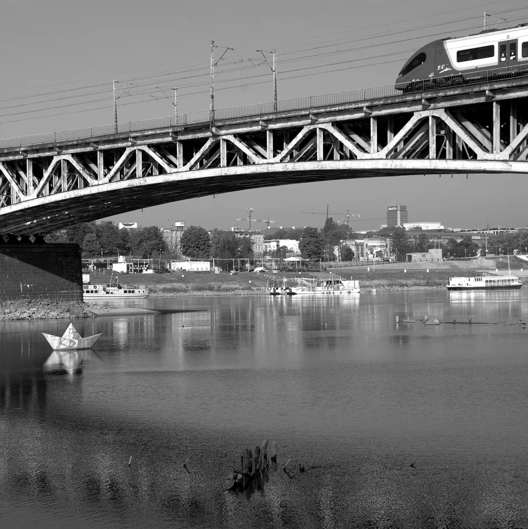
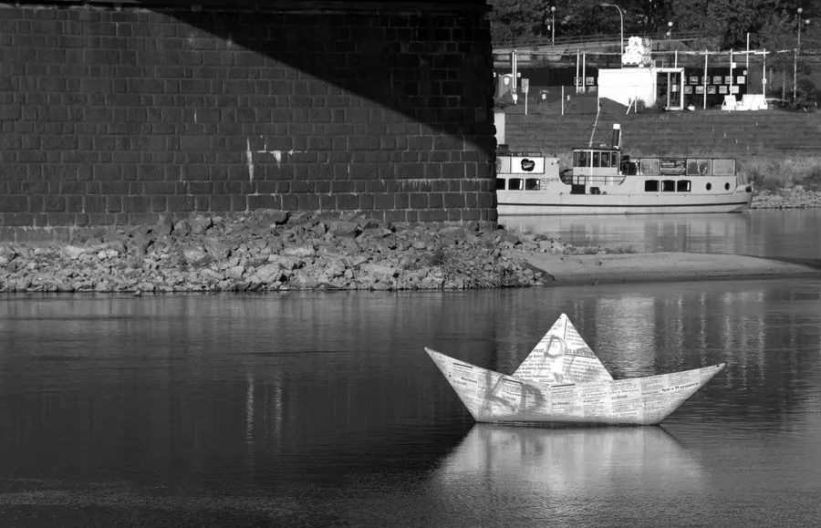
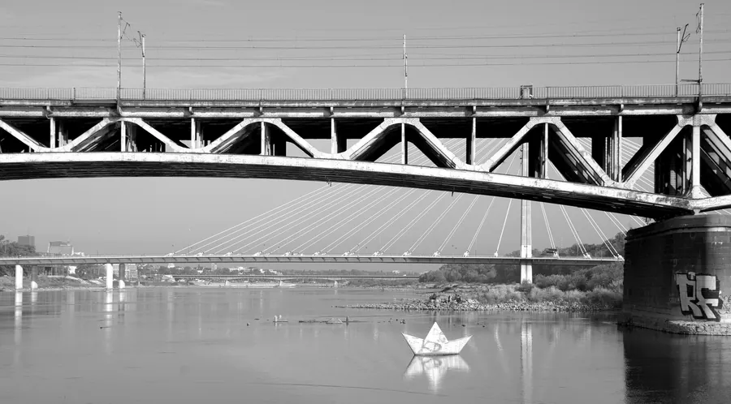
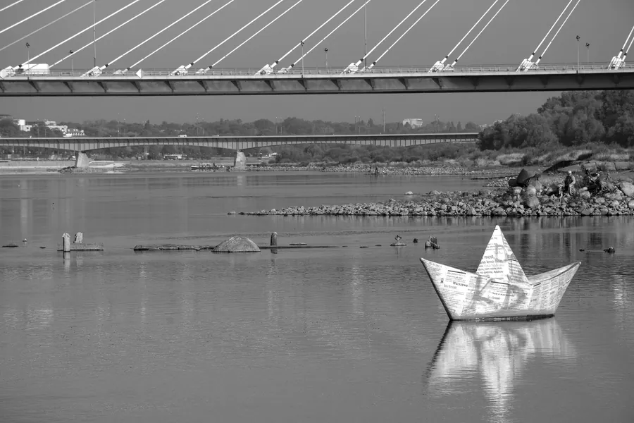
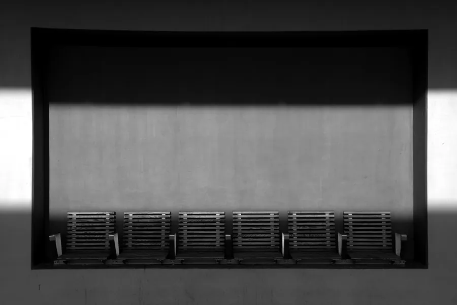
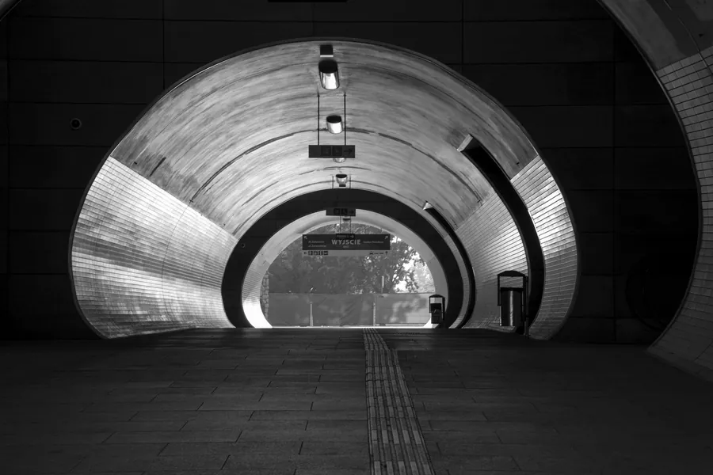
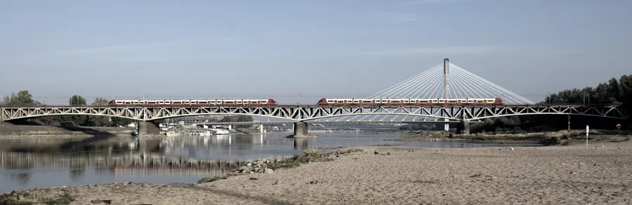

Przejdź do treści
Zenbliski
Menu
Archiwalne
Analogowe
Kolekcja
Biblioteka
Akcesoria foto
Materiały reklamowe
Artykuły – linki – blog
Foto ciekawostki
Cyfrowe
Cyfrowe
Zdjęcia z aparatów cyfrowych
Nikon D7100, Warszawa 2015 r.
Aparat
Nikon D7100
Miejsce
Warszawa, 2015 r.







Następna
Nikon D750, Nikkor 50 mm 1:1,4, Wrocław 2021 r.
 Zenbliski
Zenbliski